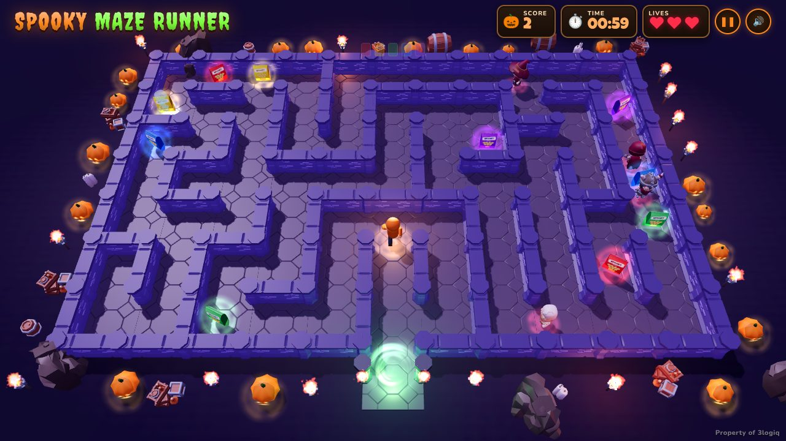
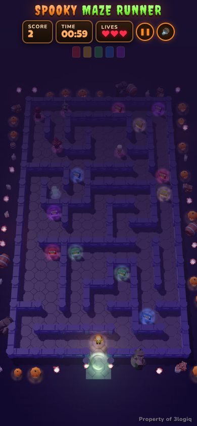
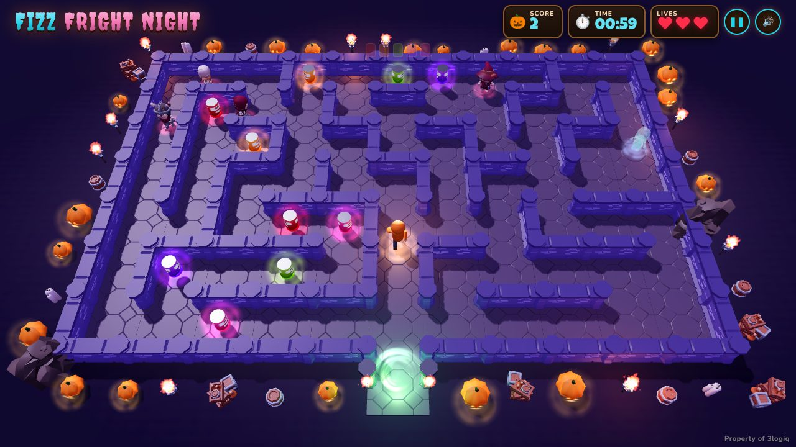
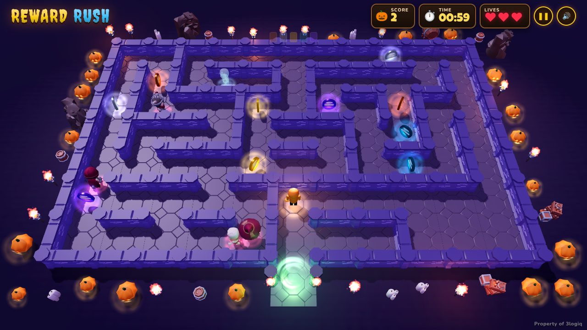

Spooky Maze Runner
A re-skinnable Halloween HTML5 maze game with leaderboards — built for brand promotions and seasonal campaigns.


Players run through a haunted 3D dungeon maze, collecting the sponsor's products while five skeleton monsters (and a ghost) hunt them down. Rounds last 60 seconds with three lives, then players submit their score to daily, weekly and all-time leaderboards. A new maze is generated every round.
Features
- Real-time 3D (three.js / WebGL) that runs in any modern browser — phones, tablets and desktops. No build step, no plugins.
- Swipe anywhere to steer on phones (keep the finger moving to turn corners); arrow keys / WASD or mouse drag on desktop.
- New random maze every round, with loops so there's always a way around a monster; taller mazes on tall phones.
- Five monsters with their own speed and chasing personality, animated KayKit skeleton models.
- Built-in 4-step tutorial, countdown, pause, sound toggle, vibration on phones, fullscreen and screen-awake while playing.
- Skill-based scoring (combos, speed bonus, near misses, full-set bonuses) so players rarely tie.
- Re-skin from one JSON file: game name, logo, colours, the five collectible products (with real product photos), their 3D shape (bag, can, box, coin or gift) and the prize text.
- Optional Node.js leaderboard server (zero dependencies): daily / weekly / all-time boards, one entry per player, cheat checks, CSV export of winners.
- Works without the server too — the leaderboard then lives in the player's browser.
- Automatically lowers graphics quality on slow devices.
- Fully offline: fonts, models and effects are bundled; no external requests.
Quick start
Option A — with the leaderboard server (recommended)
Requires Node.js 18 or newer (24 LTS recommended). No npm install is needed.
cd spooky-maze-runner-v1.0.0 node server.js # open http://localhost:8080
Option B — static files only
Upload the folder to any web host (Apache, Nginx, Netlify, GitHub Pages, S3…) and open index.html through the web address.
Everything works, but each player only sees scores saved on their own device.
file://). Always open the game through a web server — node server.js or any static server.File structure
index.html the game page (HUD, menus, tutorial, leaderboard, game-over form) css/style.css all styling (colours come from the vendor file) js/config.js gameplay, scoring and difficulty settings js/game.js game loop: rules, scoring, collectibles, camera js/maze.js maze generator (braided, with escape loops) + path-finding js/world.js builds the 3D dungeon maze, lights, portal and decor js/entities.js player, skeleton monsters (AI), collectibles js/textures.js collectible labels and procedural textures js/input.js keyboard and swipe controls js/vendor.js loads and validates the vendor (skin) file js/scoring.js scoring + ranking rules (shared with the server) js/leaderboard.js leaderboard client with offline fallback js/audio.js, vfx.js synthesized sound effects/music, sprite-sheet effects vendors/<id>/vendor.json one folder per skin (spooky, example-drinks, example-rewards) assets/ 3D models, effect sprites, fonts, icons, licences vendor/three/ three.js r170 (MIT) server.js optional static server + leaderboard API ecosystem.config.cjs optional PM2 process file for Node hosts documentation/ this guide
Re-skinning (vendor.json)
Every brand-specific thing lives in vendors/<id>/vendor.json. Three skins are included:
| Skin id | Game name | Players collect | Shape |
|---|---|---|---|
spooky (default) | Spooky Maze Runner | treat bags | bag |
example-drinks | Fizz Fright Night | cans | can |
example-rewards | Reward Rush | reward coins (requires a mobile number) | coin |


Make your own skin
- Copy
vendors/spookytovendors/acme(lowercase letters, digits and-). - Edit
vendors/acme/vendor.json(fields below) and put any images in the same folder. - Preview it:
http://your-site/?vendor=acme - Make it the default: start the server with
VENDOR=acme(or rename the folder tospookyon static hosting).
{
"title": ["ACME", "MAZE MADNESS"],
"logo": "logo.png",
"tagline": ["COLLECT.", "SURVIVE.", "WIN."],
"colors": { "primary": "#ff8a1f", "secondary": "#7dff3a" },
"item": { "one": "chocolate bar", "many": "chocolate bars", "shape": "box" },
"label": { "brand": "ACME", "tagline": "CHOCOLATE" },
"items": [
{ "name": "Milk", "color": "#7c4a2d", "accent": "#fde68a", "image": null },
{ "name": "Dark", "color": "#3b2416", "accent": "#fca5a5", "image": "dark.png" },
{ "name": "White", "color": "#e9dcc7", "accent": "#7c4a2d", "image": null },
{ "name": "Caramel", "color": "#c27c2c", "accent": "#fff7ed", "image": null },
{ "name": "Mint", "color": "#2f855a", "accent": "#f0fff4", "image": null }
],
"prizes": {
"daily": "Daily winners receive a chocolate hamper.",
"weekly": "Weekly leaders win a cinema voucher.",
"final": "The overall champion wins a year of chocolate."
},
"credit": "Property of 3logiq",
"leaderboard": { "requirePhone": false, "phoneCountry": "LK" }
}
| Field | Meaning |
|---|---|
title | Game name, shown as two lines (first in the primary colour, second in the secondary colour). Also the browser tab title. |
logo | Optional image file in the skin folder, shown above the title on the menus. null for none. |
tagline | Three short words shown at the bottom of the start screen. |
colors | primary and secondary as #rrggbb. Buttons, titles and highlights derive from them. |
item.one / item.many | What the collectibles are called in all texts ("treat bag" / "treat bags"). |
item.shape | 3D shape of the collectibles: bag, can, box, coin or gift. |
label | Brand name and small tagline printed on the drawn collectibles. |
items | Exactly five kinds. name, color (#rrggbb), accent (text colour on the label) and optional image: a real product picture in the skin folder that replaces the drawn label (portrait ~5:7 for bag/box, 2:1 wrap for cans, square for coins). |
prizes | Text for daily, weekly and final winners (Rules & Prizes screen). |
credit | Small credit line in the corner. Set to "" to hide it. |
leaderboard.requirePhone | true asks players for a mobile number when submitting; each number gets one leaderboard entry and winners can be contacted. false (default) identifies players by an anonymous id stored in their browser. |
leaderboard.phoneCountry | "LK" (Sri Lankan mobiles, any common format) or "any" (any international number, 8–15 digits). |
If a skin file has a mistake, the browser console shows exactly what (e.g. "items" must list exactly 5 collectibles) and the game falls back to the default skin.
Gameplay & scoring
- A round lasts 60 seconds; the player has 3 lives and enters the maze through the green portal.
- Collectibles keep appearing around the maze, balanced across the five kinds. One of each kind is a full set.
- Touching a monster costs a life, followed by 2 seconds of invulnerability.
- The round ends when time runs out or all lives are lost.
| Action | Points |
|---|---|
| Each collectible | 10 |
| Combo: collectibles within 2.5 s of each other | ×1.25 → ×1.5 → ×1.75 → ×2 |
| Speed: grab one soon after it appears | +5, dropping by 1 every 2 s |
| Near miss: a monster gets close and you escape untouched | +5 |
| Every full set (one of each of the five kinds) | +50 |
| Every second survived | +2 |
| Each life left when the time runs out | +20 |
Ties are ranked by most collectibles, then most lives left, then longest survival, then whoever reached the score first — so the order is always unique.
Tuning the game
All gameplay numbers are in js/config.js and apply to every skin. The server reads the same file, so validation always matches.
| Setting | What it does |
|---|---|
RULES | Round length, lives, invulnerability time, how many collectibles are in the maze and how fast they respawn. |
SCORING | Points for collectibles, combo window and multiplier, speed bonus, near misses, full sets, survival and lives. |
MONSTERS | The five monsters: model, speed and how often they chase the player (0 = wander, 1 = always chase). |
MAZE | Maze size for portrait and landscape screens, how many extra openings (escape loops) it has, wall height. |
PLAYER_SPEED | How fast the player runs. |
Leaderboard server
server.js serves the game and the leaderboard API. It has no dependencies and stores scores in data/scores.json.
| Environment variable | Default | Purpose |
|---|---|---|
PORT | 8080 | HTTP port. |
VENDOR | spooky | Default skin for this installation. |
DATA_DIR | ./data | Where scores are stored. |
TZ_OFFSET_MIN | 330 | Time zone (minutes from UTC) for daily/weekly resets. 330 = UTC+05:30, 0 = UTC, -300 = US Eastern. Weeks start on Monday. |
ADMIN_KEY | (unset) | Secret that enables the winners export. Use a long random string. |
Settings can also go in a .env file next to server.js when using PM2 (ecosystem.config.cjs reads it).
Each skin has its own leaderboards, so one server can host several branded versions without mixing scores. Players keep only their best score per period.
API
| Method | Path | Description |
|---|---|---|
| GET | /api/vendor | The installation's default skin id. |
| POST | /api/session | Starts a game session (called when a round starts). |
| GET | /api/leaderboard?vendor=&period=daily|weekly|all&limit=10 | Ranked board. Never contains phone numbers. |
| POST | /api/scores | Submits a round's score breakdown. |
| GET | /api/admin/winners | Winners export (see below). |
Cheat protection
Each round can be submitted once. The server recomputes the total from the breakdown, bounds-checks every part, rejects rounds that finished faster than real time and caps how fast collectibles could physically be picked up. No browser game can be made completely tamper-proof — check the top entries before handing out valuable prizes.
Exporting winners
https://your-site/api/admin/winners?vendor=spooky&period=daily&limit=5&format=csv&key=YOUR_ADMIN_KEY
Downloads the ranked top N as a spreadsheet (format=json for JSON) with name, mobile number (when collected), score and full breakdown. period is daily, weekly or all.
ADMIN_KEY secret.Deploying
Any Node.js host (VPS, CloudPanel, Plesk, cPanel Node apps, Render, Railway…)
- Upload the folder.
- Set the start command to
node server.jsand thePORTyour host expects. - Optionally keep it running with PM2:
pm2 start ecosystem.config.cjs && pm2 save. - Put it behind HTTPS (most hosts do this for you). Fullscreen, vibration and screen-awake need HTTPS on phones.
CloudPanel
Create a Node.js site, pick Node 24 and an App Port, upload the files to the site folder, then run PORT=<app port> pm2 start ecosystem.config.cjs as the site user.
Static hosting
Upload everything except server.js and ecosystem.config.cjs. The leaderboard falls back to the player's own device.
Embedding
The game can be embedded in a page with an iframe:
<iframe src="https://your-site/?vendor=acme" style="width:100%;height:100vh;border:0" allow="fullscreen; screen-wake-lock"></iframe>
Browser support
Latest Chrome, Edge, Firefox and Safari on desktop; Chrome and Samsung Internet on Android; Safari on iOS 15+. WebGL is required. Add ?low to the address to force the light graphics mode.
FAQ & troubleshooting
The page stays on "Summoning skeletons…" — the game was opened from disk or the assets folder is missing. Open it through a web server.
My skin isn't used. — check the browser console for the reason; the id must match the folder name and the file must be valid JSON with five items.
Scores aren't shared between players. — you're on static hosting; run server.js for shared leaderboards.
Day/week resets at the wrong time. — set TZ_OFFSET_MIN for your time zone.
Can I change the monsters? — edit MONSTERS in js/config.js. The models come from assets/models/skeletons/; any glTF character using the same rig works.
The game is too hard / too easy. — lower or raise monster speed and chase, or change MAZE.extraOpenings (more openings = more escape routes).
Credits & licences
Game code © 3logiq, licensed to you under your Envato licence. Third-party components (all allow commercial use and redistribution):
| Component | Author | Licence |
|---|---|---|
| three.js r170 | three.js authors | MIT — vendor/three/LICENSE |
| KayKit Dungeon Pack 1.1 | Kay Lousberg (kaylousberg.com) | CC0 — assets/licenses/ |
| KayKit Skeletons 1.1 | Kay Lousberg | CC0 |
| Brackeys VFX Bundle (particles by Picster & Kenney, sprite sheets by CodeManu) | Various | CC0 |
| Creepster, Nunito fonts | Font Diner; Nunito Project Authors | SIL OFL 1.1 — assets/licenses/fonts/ |
| Luckiest Guy font | Astigmatic | Apache 2.0 — assets/licenses/fonts/ |
Sound effects and music are synthesized in code (no audio files).
Changelog
1.0.0 — Initial release.